Focus
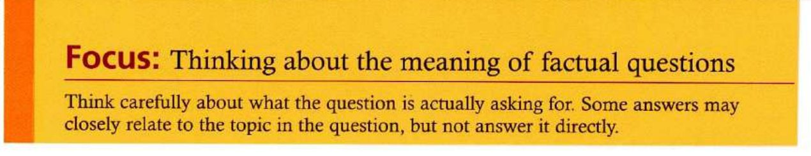
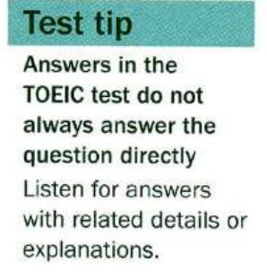
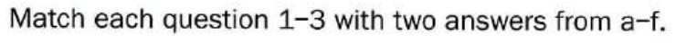
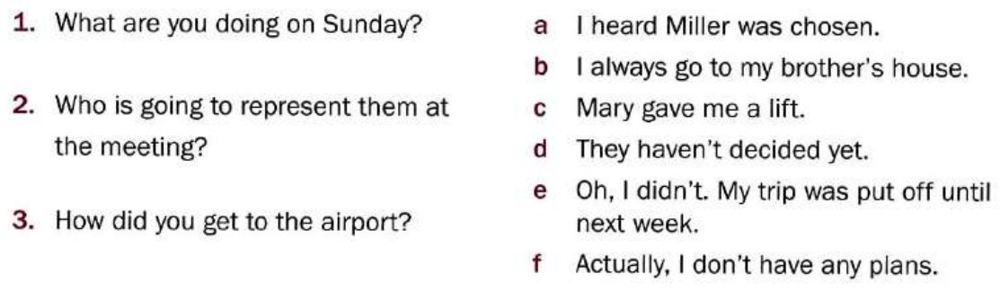
Tap the two answers that go with each question.
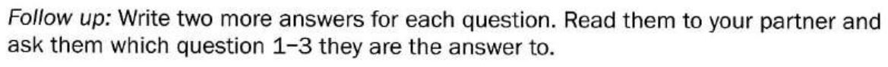
Possible answers
1 He moved away from the area.
2 My new company doesn't provide a company car.
3 They are sending them by courier.
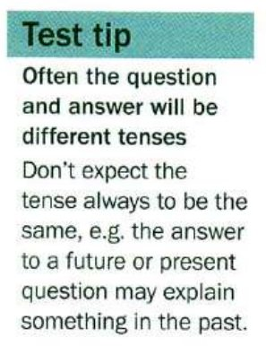
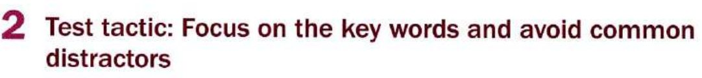
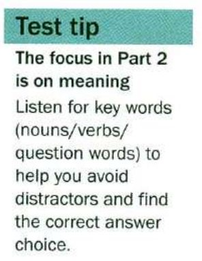
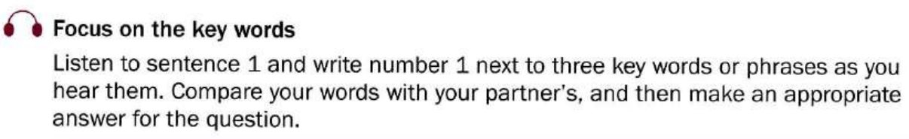
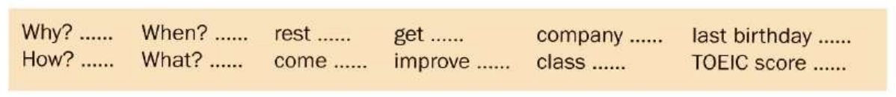
Key words & tapescript
1. How do you come to class?
2. What did you get for your last birthday?
3. Why do you want to improve your TOEIC score?
1 How? come, class — I walk, by bus, my friend drives me, on the train
2 What? get, last birthday — a new watch, some gift vouchers, the latest Mariah Carey album
3 Why? improve, TOEIC score — to get into university, for my job, it's a personal challenge
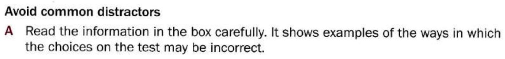
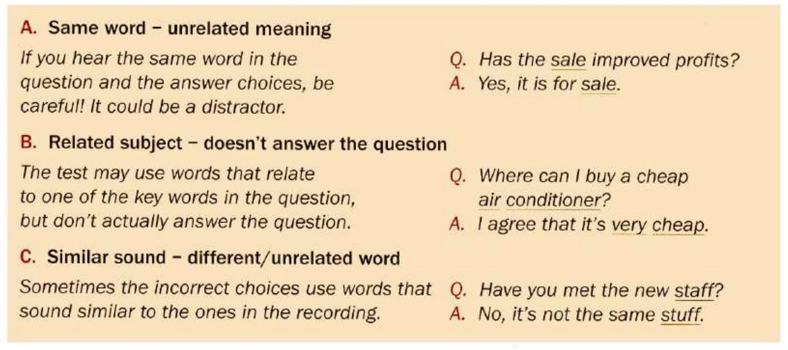
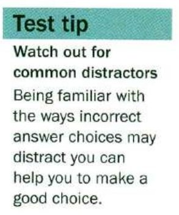
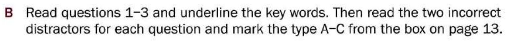
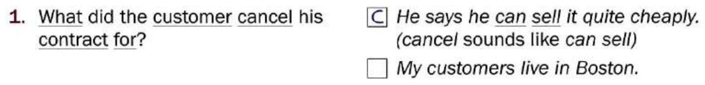
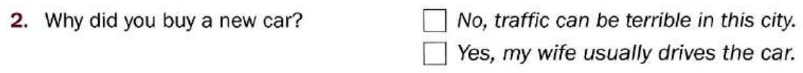
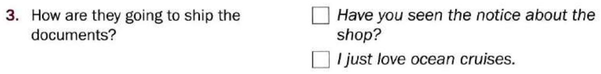
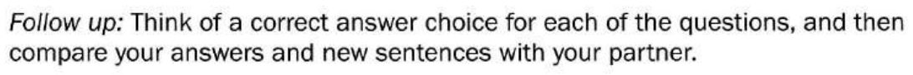
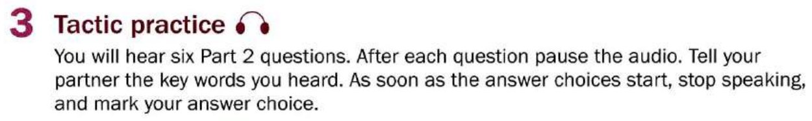
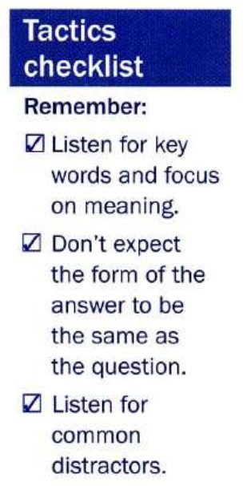
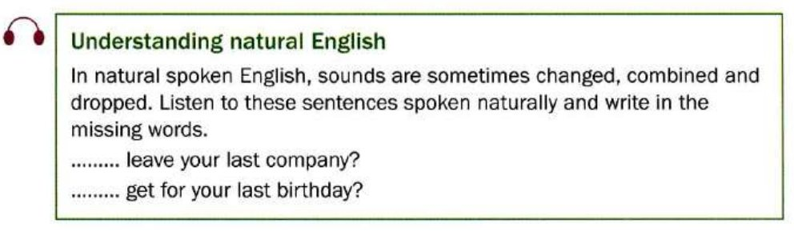
Tapescript
Why did you leave your last company?
What did you get for your last birthday?
Mini-test
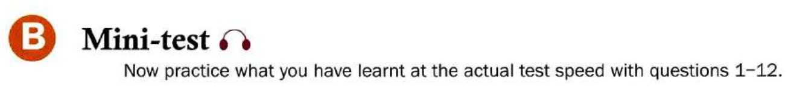
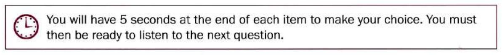
Nothing is printed for Part 2 — you only hear the question and the three responses, just like the real test.
Learn by doing: Factual questions
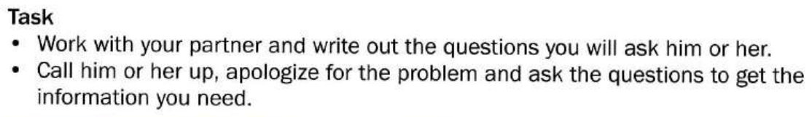
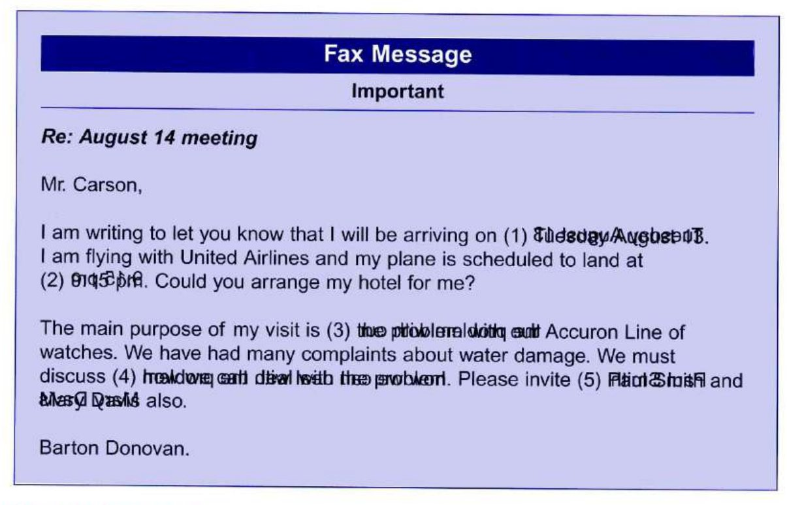
Student B: your teacher will send you a separate link with your information. Don't ask for it if you are Student A.
Possible questions
(1) What date are you / will you be arriving? / When are you / will you be arriving?
(2) What time is your plane landing / scheduled to land? / What time is the flight arriving?
(3) What's the main purpose of your visit?
(4) What is the main problem / issue to discuss in the meeting? What will we discuss?
(5) Who else do you want to invite to the meeting?
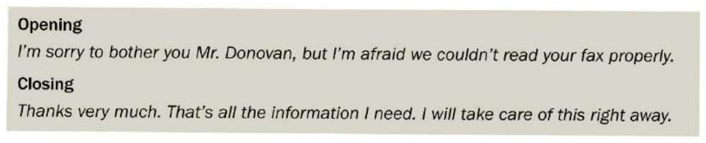
After the call
Write down the five missing pieces of information you got from Mr. Donovan, then check whether you heard them correctly.
Further study
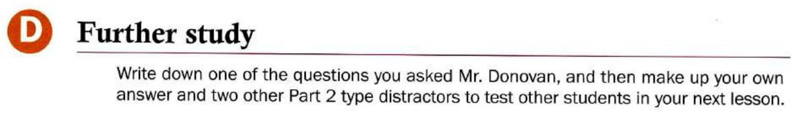
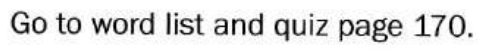